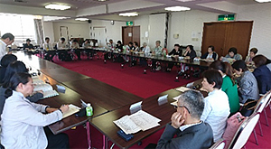

|
|
4月23日（火）13時30分より、市民会館うらわ503・505会議室にて、第55回埼玉県消費者大会第1回実行委員会が開催され、30人（20団体）と事務局2人、見学1団体1人が出席しました。 【議題】  1．岩岡事務局長あいさつ 2．第55回埼玉県消費者大会実行委員会への参加団体、運営体制・進め方について確認しました 昨年度の実行委員会での意見や懇談会での意見を踏まえ、申し送り事項で確認していた埼玉消団連幹事会からの正副実行委員長だけでなく、副実行委員長に地域団体から入ってもらうこと、正副委員長で実行委員会のすすめ方について話し合う場を持つこと、その際、交通費は実行委員会が負担することを説明しました。実行委員長 廣田美子さん(さいたま市消費者団体連絡会)、副実行委員長 川上豊子さん（埼玉母親大会連絡会)、事務局長 岩岡宏保さん(埼玉消団連)を確認しました。 3．参加者自己紹介と団体活動紹介をしました 団体の活動の様子や高齢化・会員の減少など、悩みも出されました。 4．第54回消費者大会決算報告・第55回消費者大会分担金・予算を確認しました 決算報告を事務局よりおこない、確認しました。また、分担金案・予算案について事務局より説明し、意見交換の上で確認しました。そもそもの分担金の算出基準などについて質疑がありました。埼玉県以外の助成金を受けることも検討したらとの意見もありました。 5．消費者をとりまく社会状況について学習しました 事務局長より、私たち消費者をとりまく社会状況・埼玉県の状況について報告をおこない、そのうえで、大会の柱となるテーマ・スローガンや、全体会記念講演・分科会・プレ学習会で学ぶべきことについて、意見交換をおこないました。 6．市町村消費者行政調査を今年も実施することを確認しました（口頭） 7．実行委員会団体に今年度のプレ学習会、第1回県内消費者団体全体研修会、地区別研修会の日程についてお知らせし、閉会しました。 |